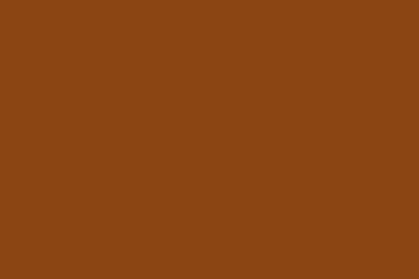

Pas Planetoid
Pas planetoid to region pełen asteroidów znajdujący się między orbitami Marsa a Jowisza. Zawiera on miliony mniejszych ciał niebieskich, fragmentów z czasów tworzenia się Układu Słonecznego. Choć wydawać się może, że pas planetoid jest zagęszczonym polem asteroidów, w rzeczywistości obiekty są rozrzedzone i znajdują się daleko od siebie. Największym obiektem w pasie planetoid jest planeta karłowata Ceres.
📊 Podstawowe Dane
🎨 Model w Skali 1:10¹⁰
Odległość od Słońca na modelu
Położenie względem planet
🪨 Czym jest pas planetoid?
Pas planetoid powstał z pozostałości materii z czasów, gdy formował się Układ Słoneczny. Przed miliardami lat, małe stałe ciała zaczęły się łączyć i tworzyć większe obiekty. Jednak grawitacja Jowisza przeszkadzała asteroidom w łączeniu się w jedną planetę, dlatego zamiast tego powstało wiele oddzielnych ciał. Астероиды w pasie planetoid mogą mieć różne rozmiary - od pył do kilka kilometrów średnicy. Większość mas zawarta jest w kilku największych obiektach, z których Ceres jest największym.
🪨 Ciekawostki
- Pas planetoid jest tzw. "pasem głównym" (ang. Main Asteroid Belt)
- Asteroidy w pasie planetoid są od siebie tak daleko, że statek kosmiczny może przejść przez pas bez kolizji
- Gdy asteroidy zderzają się, tworzą nowe, mniejsze fragmenty
- Niektóre asteroidy z pasu planetoid czasami zmierzają ku wewnętrznym częściom Układu Słonecznego
- Pas planetoid zawiera wiele substancji, w tym żelazo, nikiel i silikatowe skały
- W przyszłości pas planetoid może być źródłem zasobów dla ludzkości